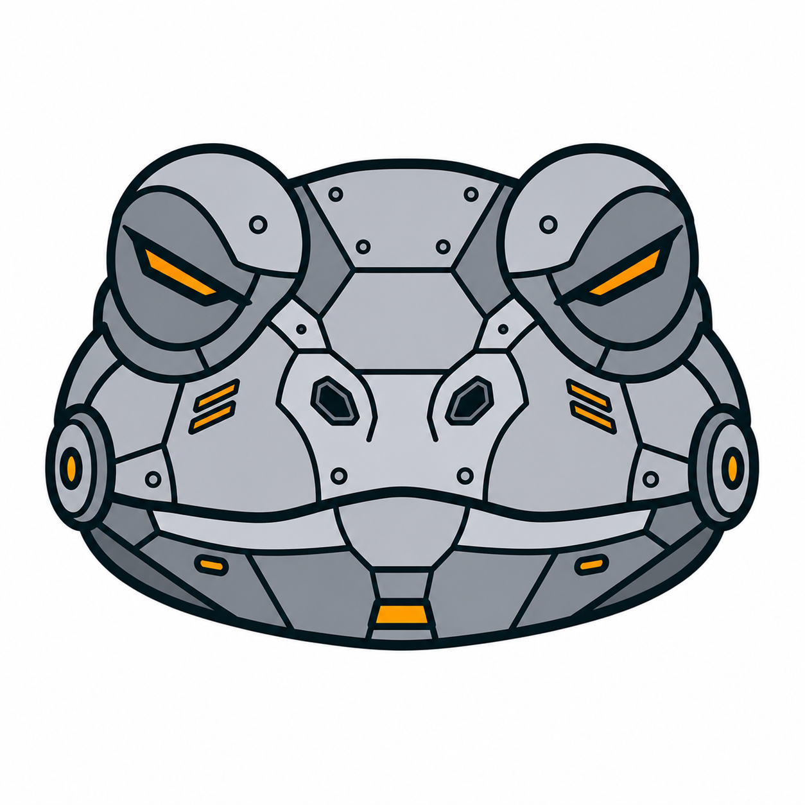

Token-efficient
An agent is ~28% of the tokens of the equivalent JSON-schema + SDK boilerplate it replaces — cheaper to write, read, and generate.

Token-Oriented Agentic Development
Write an AI agent as a tiny, declarative .agent file in a
token-oriented syntax derived from
TOON. The toac compiler turns it into readable, fully-typed
TypeScript that runs on Claude — minimal enough that humans
and LLMs can author it.


A strict superset of TOON · TypeScript end-to-end · MIT
An agent is ~28% of the tokens of the equivalent JSON-schema + SDK boilerplate it replaces — cheaper to write, read, and generate.
[N] lengths and {field} headers hand a
model the structure up front, so it can author agents reliably.
inputs, outputs, and tools
become real TypeScript types. Misuse is a compile error.
Tool bodies live in a co-located .tools.ts — the
escape hatch for anything the declarative layer shouldn't do.
Structural parsing is delegated to the spec-conformant
@toon-format/toon decoder. No bespoke parser.
The output is readable TypeScript you can read, diff, and debug — not an opaque runtime. The emitted code is the docs.
Loops, conditionals, object fields, and interpolation — all type-checked against the agent's typed inputs. A kitchen-sink agent:
.agent file in TOON-derived
syntax.
toac turns prompt: | blocks
into valid TOON, then parses with the real TOON decoder.
{inputs.x}
references become a typed agent model.
toad-runtime over the Anthropic API.
TOAD's syntax is small and explicit on purpose — so an LLM can author it. Copy this prompt into Claude, describe your agent, and paste the result into the playground below.
Full format reference: docs/authoring.md.
Edit the agent on the left — it compiles in your browser, live, with
the real toac compiler.
# install the compiler (the `toac` CLI) + runtime
npm i -g toad-compiler
npm i toad-runtime @anthropic-ai/sdk
# compile an agent to typed TypeScript
toac build researcher.agent